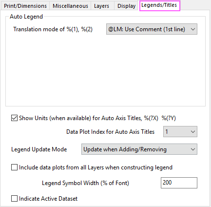
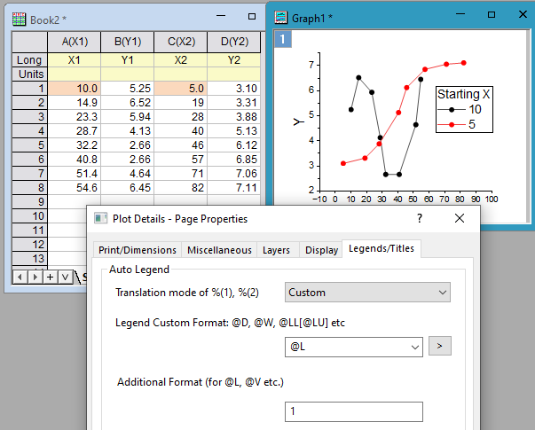
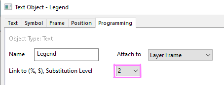
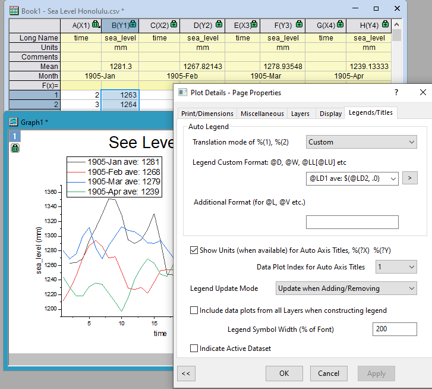

Die Registerkarte Legenden/Titel (Details Zeichnung)
PD-Dialog-LegendTitles-Tab
Der Registerkarte enthält Bedienelemente für die Erstellung der automatischen Legende und den Titel in Origin-Diagrammen.

Autom. Legende
Übersetzungsmodus von %(1) %(2)
Anstatt %(1) manuell in %(1, @LM), %(1, @L, 1) etc. im Legendenfeld zu ändern, legen Sie fest, welche Headerinformationen einer Arbeitsblattspalte verwendet werden sollten, um %(1) in der Legende zu übersetzen.
| Kommentar verwenden (1. Zeile) |
Standardeinstellung Verwenden Sie die erste der Kommentarzeilen, falls vorhanden. Andernfalls verwenden Sie den Langnamen der Spalte. Wenn weder die Zeile Kommentare noch Langname über Inhalt verfügt, wird der Kurzname der entsprechenden Spalte verwendet.
|
| Datenbereich |
Datenbereich der Zeichnung in der Arbeitsmappe Die Syntax wäre [Arbeitsmappe]Arbeitsblatt!Col(Index)[Startindex, Endindex].
|
| Langname und Einheiten |
Verwenden Sie die Variablen in den Spaltenbeschriftungszeilen des Langnamens kombiniert mit denen in den Einheiten. Das Anzeigeformat wäre Langname(Einheit) in der englischen und japanischen Version von Origin und Langname[Einheit] in der deutschen Version.
Wenn es keinen Inhalt für Langname gibt, wird stattdessen die Spalte Kurzname verwendet.
|
| Benutzerparameter 1 |
Verwenden Sie den ersten benutzerdefinierten Parameter der entsprechenden Datenspalte.
|
| Langname |
Verwenden Sie den Langnamen der entsprechenden Datenspalte.
|
| Kurzname |
Verwenden Sie den Kurznamen der entsprechenden Datenspalte.
|
| Parameter 1 |
Verwenden Sie den ersten Parameter der entsprechenden Datenspalte.
|
| Benutzerdefiniert |
Verwenden Sie die benutzerdefinierte Zeichenkette, die in den Bearbeitungsfeldern Benutzerdefiniertes Legendenformat und Zusätzliches Format (für @L, @V, @WT) festgelegt ist. Siehe die Vollständige Liste der @Optionen für alle verfügbaren Argumente. Die Kombination dieser @(Buchstaben)Argumente wird unterstützt.
|
| Volle Syntax |
Verwenden Sie die Bearbeitungsfelder Volle Syntax, um das Legendenformat benutzerdefiniert anzupassen.
|
| Hinweise: RichText-Formatierung kann für Spaltenkopfzeilen aktiviert werden, um tief- und hochgestellte sowie Sonderzeichen anzuzeigen. Bitte lesen Sie diese Beitrag in der Schnellhilfe, um Einzelheiten zu erfahren. |
_Legends_Titles_Tab/Tip_icon.png) |
Wenden Sie die Einstellung Übersetzungsmodus von %(1) %(2) von einem Diagramm auf ein anderes Diagramm an (einschließlich die Zeichenketten des Benutzerdefinierten Legendenformats), indem Sie mit der rechten Maustaste auf das Legendenobjekt klicken und Format kopieren: Alle auswählen. Klicken Sie mit der rechten Maustaste auf die Ziellegende und wählen Sie Format einfügen in: Alle.
|
Benutzerdefiniertes Legendenformat
Dieses Bearbeitungsfeld wird nur angezeigt, wenn Benutzerdefiniert in der Auswahlliste Übersetzungsmodus von %(1) %(2) ausgewählt ist. Sie können Text eingeben oder in der Auswahlliste eine der häufig verwendeten Formate auswählen.
Sie können auf die Schaltfläche _Legends_Titles_Tab/Button_Arrow_in_Legend_Tab.png) neben dem Kombinationsfeld klicken, um die Liste der @(Letter)-Argumente anzuzeigen. Außerdem können Sie in der Vollständigen Liste der @Optionen Einzelheiten nachlesen.
neben dem Kombinationsfeld klicken, um die Liste der @(Letter)-Argumente anzuzeigen. Außerdem können Sie in der Vollständigen Liste der @Optionen Einzelheiten nachlesen.
Zusätzliches Format
Wenn Benutzerdefiniert für den Übersetzungsmodus von %(1), %(2) und @L (X-Wert), @V (Y-Wert) oder @WT (Zellenwert) für das Benutzerdefinierte Format der Legende ausgewählt ist, muss das Feld Zusätzliches Format ausgefüllt werden, um den Zeilenindex oder die Zeilen- und Spaltenindizes festzulegen, z. B.:
- Die Auswahl von @L unter Benutzerdefiniertes Format der Legende und die Eingabe von 1 in Zusätzliches Format (für @L, @V etc.) zeigen den ersten X-Wert von jeder Zeichnung als Legendentext.
- Die Auswahl von @V unter Benutzerdefiniertes Format der Legende und die Eingabe von 5 in Zusätzliches Format (für @L, @V etc.) zeigen den fünften Y-Wert von jeder Zeichnung als Legendentext.
- Die Auswahl von @WT unter Benutzerdefiniertes Format der Legende und die Eingabe von 2,3 oder B,3 in Zusätzliches Format (für @L, @V etc.) zeigen die zweite Spalte B und den dritten Zeilenwert des Quellarbeitsblatts der Zeichnung als Legendentext.

In der vollständigen Liste der @Optionen können Sie Einzelheiten nachlesen.
Um das Anzeigeformat des numerischen Werts in der Legende weiter benutzerdefiniert anzupassen,
- fügen Sie für @WT das benutzerdefinierte numerische Format als 3. Argument im Feld Zusätzliches Format ein. Zum Beispiel: B, 3, .2 verwendet die Daten aus Zeile 3 von Spalte B als Legende mit 2 Dezimalstellen. B,3, P*2 verwendet die dritte Zeile von Spalte B in wissenschaftlicher Notation mit 2 signifikanten Stellen.
- Für alle anderen Übersetzungsmodi, unabhängig von den Standardbeschriftungszeilen wie @LA, @LC, benutzerdefinierten Parameterzeilen @LD1, ..., oder @L, @V, ...., verwenden Sie $( , ), um das Anzeigeformat benutzerdefiniert anzupassen. Klicken Sie dann mit der rechten Maustaste auf das Legendenfeld und wählen Sie im Kontextmenü Eigenschaften.... Setzen Sie auf der Registerkarte Programmierung die Option Verknüpfung zu (%,$), Substitutionsebene auf 2. Im folgenden Bild wird der Mittelwert von jeder Zeichnung zum Beispiel mit 0 Deziemalstellen gezeigt.


Volle Syntax
Wenn Volle Syntax in der Auswahlliste Autom. Legend ausgewählt ist, können Sie mit der vollen Syntax des Legendentexts füllen.
Es gibt ein Ausklappmenü, um Beispiele der Syntax zu zeigen.
_Legends_Titles_Tab/Full_Syntax_Examples.png)
Zum Beispiel bedeutet %(?X, @LL) Langname der X-Spalte. ? stellt den Zeichnungsindex dar.
Einheiten anzeigen (falls verfügbar) für autom. Achsentitel, %(?X) %(?Y)
Wählen Sie diese Option, um den Inhalt der Arbeitsblattspalte Einheiten zum Achsentitel hinzuzufügen.
Index der Zeichnungen für autom. Achsentitel
Diese Einstellung ist nützlich, wenn Sie mehrere Y-Spalten mit Daten gegen nur eine X-Achse zeichnen wollen. Verwenden Sie die Auswahlliste, um zu bestimmen, welche Spalte die Informationen für den autom Achsentitel liefert.
|
Hinweis: Die Systemvariable @FPT wird verwendet, um zu steuern, ob Index der Zeichnungen für autom. Achsentitel Funktionsdiagramme ausschließt.
|
Aktualisierungsmodus der Legende
Diese Option wird verwendet, um zu bestimmen, wie die Legende geändert werden soll, wenn neue Zeichnungen zu dem Diagramm hinzugefügt werden. Drei Modi sind in der Auswahlliste verfügbar:
| Beim Hinzufügen/Entfernen aktualisieren |
Die Legende werden nur hinzugefügt/entfernt, wenn eine Datenzeichnung zum zugehörigen Layer des Diagramms hinzugefügt/entfernt wird.
Hinweis: Das Format und die Struktur der vorhandenen Legende(n) wird nicht verändert.
|
| Beim Hinzufügen/Entfernen neu erzeugen |
Die Legende(n) wird/werden neu erzeugt, sobald (eine) Datenzeichnung(en) zu dem zugehörigen Layer des Diagramms hinzugefügt bzw. aus ihm entfernt wird.
Hinweis: Das Legendenformat wird auf die Standardeinstellungen zurückgesetzt.
|
| Kein |
Die Legende(n) wird/werden nicht aktualisiert oder neu erzeugt, sobald (eine) Datenzeichnung(en) zu dem zugehörigen Layer des Diagramms hingefügt bzw. aus ihm entfernt wird. |
Zeichnungen aus allen Layern beim Erzeugen der Legende einschließen
Ist diese Option deaktiviert, fügt Origin nur die Datensätze ein, die sich in dem Diagrammlayer befinden, der bei Erzeugen der Legende aktiv war. Bei einigen Diagrammvorlagen -- insbesondere solche, die mehrere Layer beinhalten, wie die Diagramme mit doppelter Y-Achse -- ist diese Funktion standardmäßig voreingestellt. Bei Aktivierung wird die Legende automatisch alle Datensätze des Diagrammfensters einschließen.
Hinweis: Diese Option steht nicht für Legenden von katgeorialen Werten und Punkt-für-Punkt-Legenden zur Verfügung.
Symbolbreite der Legende (in % der Schriftart)
Diese Einstellung bestimmt die Breite der Symbole des Diagrammtyps in der Legende mit einem prozentualen Wert der Schriftgröße der Legende.
Diese Einstellung hat keinen Einfluss auf die Farbskalen oder Blasenskalen.
Aktiven Datensatz kennzeichnen
Aktivieren Sie das Kontrollkästchen Aktiven Datensatz hervorheben, um den aktiven Datensatz in der Legende kenntlich zu machen. Ist dieses Kontrollkästchen aktiviert, umrandet ein schwarzes Rechteck das Symbol der aktiven Datenzeichnung in der Legende.
Außerdem lässt sich die aktive Datenzeichnung durch Klicken auf das Symbol der Datenzeichnung in der Legende auswählen, wenn dieses Kontrollkästchen aktiviert ist.
|
Hinweis:
- Dieses Kontrollkästchen ist äquivalent zu der Option, mit der rechten Maustaste auf die Legende zu klicken und Legende: Aktiven Datensatz kennzeichnen im Kontextmenü auszuwählen.
- Sie können die aktive Datenzeichnung auch über die Datenliste im unteren Bereich des Menüs Daten oder von einem Kontextmenü aus aktivieren (zum Beispiel durch Rechtsklick auf die Zeichnung und wählen von Aktiv setzen).
|